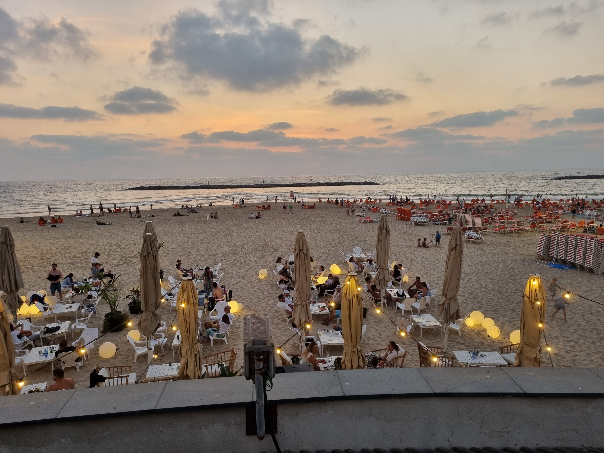

Ankomst
 Vi ankom Tel Aviv midt på natta den 27 Juli. Vi bokket oss inn på hotelet, og deretter valgte vi å finne et
sted å spise, selv om mesteparten var stengt. Vi fant et sted hvor vi spiste, og det tilfeldigvis kom en
hund, som begynte å tigge etter maten vår. Vi fant opplevelsen veldig merkelig, siden eieren ikke kom for å
hente hunden, før jeg og pappa teknisk sett var ferdig å spise. Hun som jobbet på resturangen prøvde senere
å skamme pappa, ved å overbelaste ham for hvor mye maten faktisk var verdt. Vi gikk aldri til den
resturangen igjen.
Vi ankom Tel Aviv midt på natta den 27 Juli. Vi bokket oss inn på hotelet, og deretter valgte vi å finne et
sted å spise, selv om mesteparten var stengt. Vi fant et sted hvor vi spiste, og det tilfeldigvis kom en
hund, som begynte å tigge etter maten vår. Vi fant opplevelsen veldig merkelig, siden eieren ikke kom for å
hente hunden, før jeg og pappa teknisk sett var ferdig å spise. Hun som jobbet på resturangen prøvde senere
å skamme pappa, ved å overbelaste ham for hvor mye maten faktisk var verdt. Vi gikk aldri til den
resturangen igjen.
Strendene i Tel Aviv
 Stranda i Tel Aviv er kjent for å være enorm, i tilegg til å være vakker. På bilde kan du se en liten del av den masive stranda til Tel Aviv. Bildet er tatt på kvelden, den perfekte tiden til å slappe av på stranda og kanskje gå på en av de mange resturangene i nærheten. På dagen pleier strendene å være så varme at føttene dine brenner av å stå der for lenge, derimot på kvelden, blir stranda litt kjøligere hvor temperaturen kan dropper til omtrent 25 grader celsius. På stranda kan man også gå på flere tufteparker, hvor man kan trene før man kjøler seg ned i havet, men da må man være forsiktig siden det er lett å bli for varm i Israel, og man må huske å drikke mye vann.